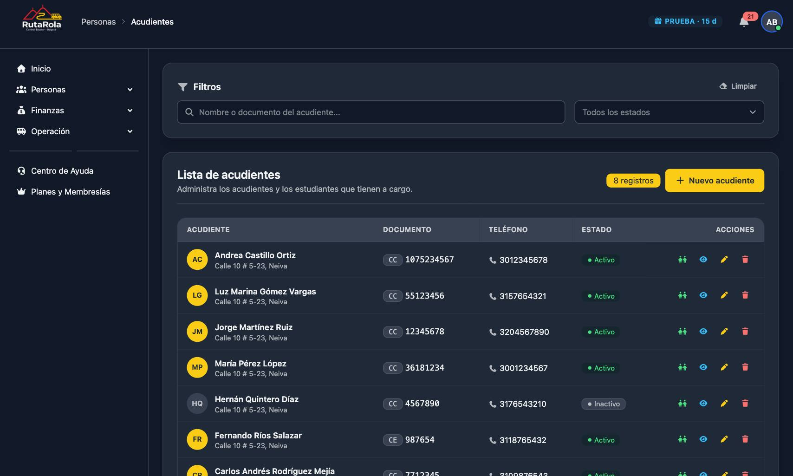
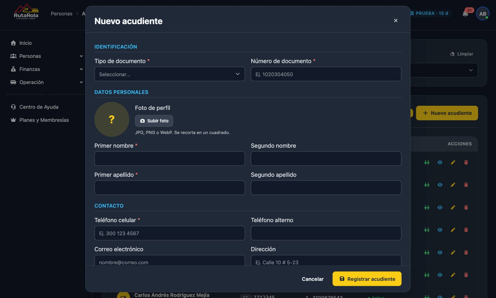
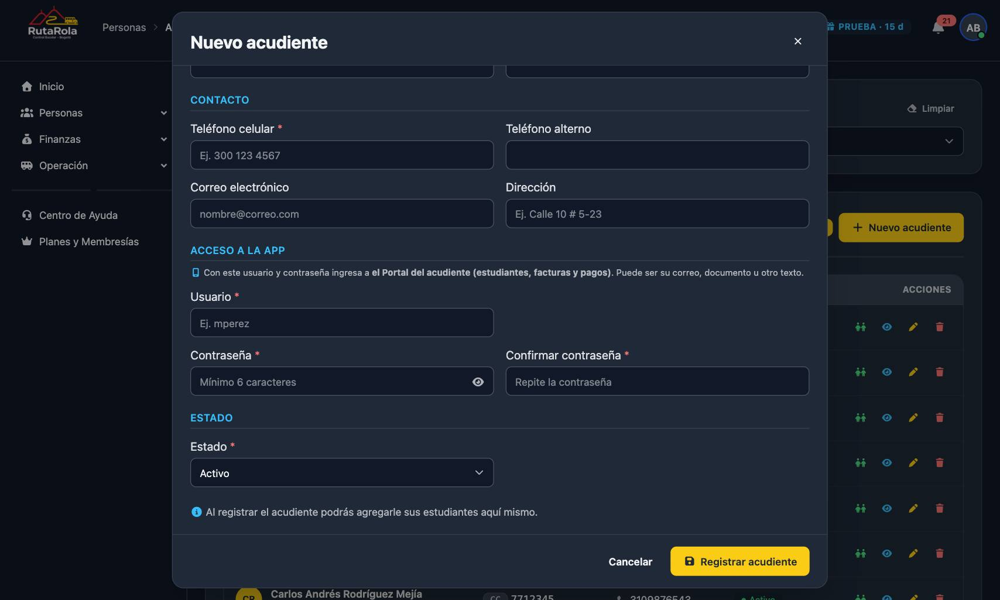
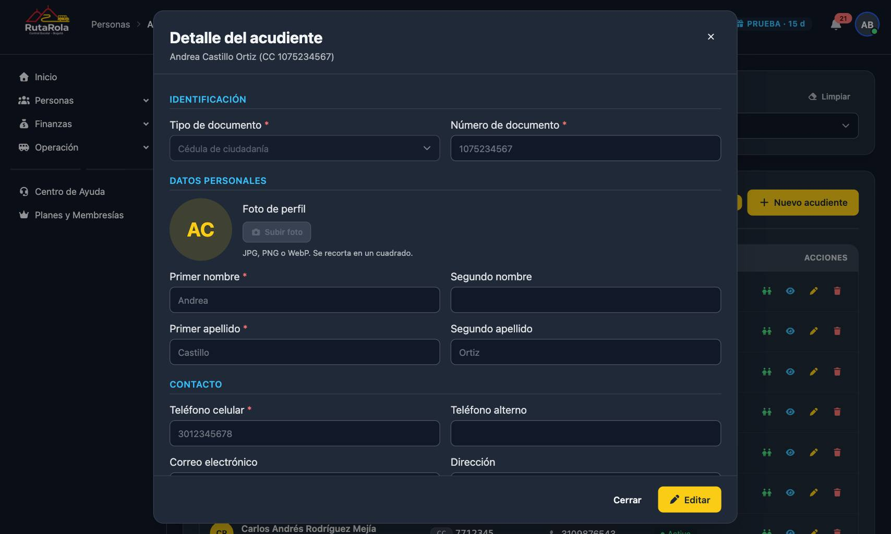
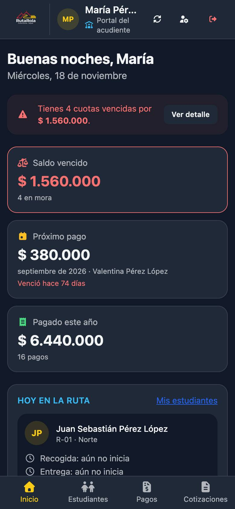
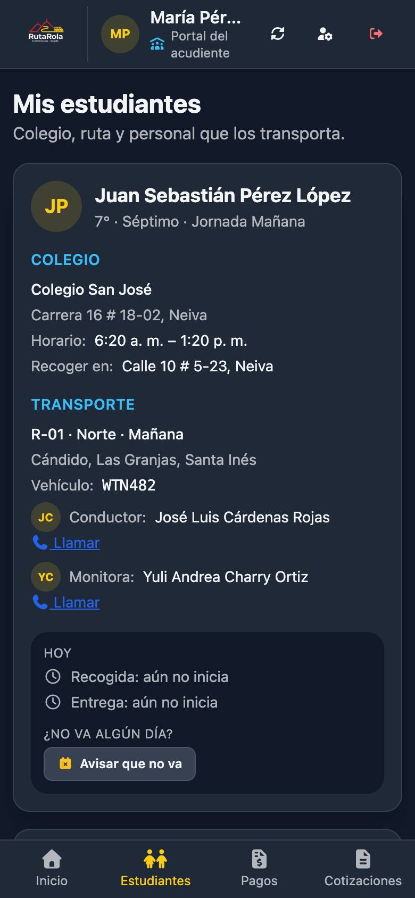
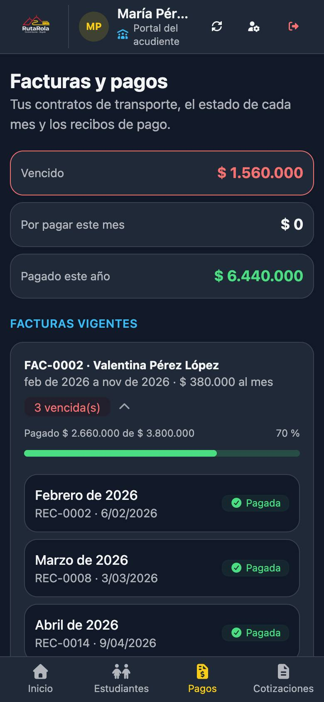

Cómo registrar a los padres o responsables, darles acceso a su portal y qué ven ellos desde el celular.
Para administradores de la empresa de transporteVersión noviembre 2026
Contenido
¿Qué es un acudiente? Su papel en RutaRola
La lista de acudientes Buscar y filtrar
Registrar un acudiente Paso a paso, con su acceso
Consultar, editar e inactivar Mantener los datos al día
El portal del acudiente Lo que ve la familia
Preguntas frecuentes Errores comunes
¿Cómo leer este manual?
Menús: Personas › Acudientes. Botones: Nuevo acudiente. Campos: negrita. Los campos con * son obligatorios.
1. ¿Qué es un acudiente?
El acudiente es la persona responsable de uno o varios estudiantes: el padre, la madre o quien contrata el servicio. Es a quien se le factura, quien recibe los recordatorios de pago y quien puede seguir la ruta desde su celular.
Un acudiente puede tener varios estudiantes (por ejemplo, hermanos).
Las facturas se hacen a nombre del acudiente, una por cada estudiante.
Con un usuario y contraseña, el acudiente entra a su portal: ve a sus hijos, sus pagos, el estado de la ruta del día y puede avisar cuando un niño no va.
2. La lista de acudientes
Entra a Personas › Acudientes.

Lista de acudientes.
Busca por nombre, documento o teléfono en el campo de texto de los filtros.
Filtra por Estado para ver solo los activos o los inactivos.
Toca una fila para consultarlo; el lápiz edita y la caneca elimina.
3. Registrar un acudiente
Toca Nuevo acudiente.
Identificación: elige el Tipo de documento y escribe el Número de documento (no puede repetirse).
Datos personales: foto opcional con Subir foto, Primer nombre, Primer apellido y, si los tiene, segundo nombre y segundo apellido.
Contacto: el Teléfono celular es obligatorio: a ese número llegan los recordatorios de pago por WhatsApp y es el que el conductor y la monitora usan para llamar. Agrega Teléfono alterno, Correo electrónico y Dirección si los tienes.

Datos de identificación, personales y de contacto.
Acceso a la app: escribe el Usuario con el que el acudiente entrará a su portal. Puede ser su correo, su número de documento o cualquier texto de 4 a 40 caracteres sin espacios. Debe ser único en todo el sistema.
Escribe la Contraseña (mínimo 6 caracteres) y repítela en Confirmar contraseña.
Deja el Estado en Activo y toca Registrar acudiente.

Sección “Acceso a la app” y estado.
Entrega del accesoComparte el usuario y la contraseña con el acudiente por un medio privado y dile que entre a app.rutarola.com. La contraseña no se puede volver a ver; si la olvida, escribe una nueva al editarlo.
Agregar sus estudiantesDespués de registrarlo, en el mismo formulario puedes agregarle sus estudiantes. También puedes crear el acudiente desde el formulario del estudiante, sin perder lo que ya escribiste.
4. Consultar, editar e inactivar

Consulta de un acudiente con sus estudiantes.
Editar
Abre el acudiente y toca Editar.
Corrige lo necesario. Si dejas la Contraseña vacía, se conserva la actual; si escribes una nueva, se cambia y se cierran sus sesiones abiertas.
Toca Guardar cambios.
Inactivar (cuando deja el servicio)
Cambia su Estado a Inactivo. Ya no podrá entrar a su portal y RutaRola registra el retiro de sus facturas desde el mes siguiente (o después del último mes pagado), así que no se le siguen cobrando meses.
Eliminar
Solo se puede eliminar un acudiente sin estudiantes, facturas ni recibos. Si ya tiene movimientos, el sistema lo explica y sugiere dejarlo Inactivo.
5. El portal del acudiente
Así ve RutaRola la familia desde el celular. Es de solo consulta, excepto el aviso de ausencia.


Izquierda: Inicio (saldo vencido, próximo pago, “Hoy en la ruta”). Derecha: sus estudiantes con colegio, ruta, conductor y monitora.
Sección
Qué encuentra el acudiente
Inicio
Saldo vencido, próximo pago, lo pagado este año, el estado de la ruta de hoy y los últimos pagos.
Estudiantes
Colegio, horario, dirección de recogida, ruta, vehículo, y el conductor y la monitora con botón para llamar.
Pagos
Estado de cuenta mes a mes: Pagada, Vencida, Pendiente o Programada, y sus recibos.
Cotizaciones
Las cotizaciones que le hayas enviado.

Pagos: estado de cuenta del acudiente.
Avisar que un estudiante no va
En “Hoy en la ruta” o en Estudiantes, el acudiente toca Avisar que no va.
Elige la fecha (hoy o hasta 30 días después) y si no asiste al colegio o si va por su cuenta (en la recogida, la entrega o ambas). Puede dejar una nota.
El conductor y la monitora ven el aviso en su ruta del día y lo confirman. Tú lo ves en Operación › Asignaciones y en el Cronograma.
Ver la ruta en el mapa
Mientras el recorrido de su hijo está en curso, el acudiente puede tocar “Ver en el mapa” y ver el vehículo en tiempo real, si tu plan incluye GPS en vivo y tienes activado ese permiso en Configuración.
6. Preguntas frecuentes
Dice “El usuario ya está en uso”
Otro acudiente, empleado o administrador ya tiene ese usuario. Elige otro (por ejemplo, el número de documento).
El acudiente no puede entrar
Revisa que esté Activo y escríbele una contraseña nueva al editarlo. El usuario no distingue mayúsculas.
No le llegan los recordatorios de WhatsApp
Revisa su Teléfono celular y que su factura tenga una programación activa en Finanzas › Programación de facturación.
El acudiente no ve el mapa
Solo aparece mientras el recorrido está en curso, con un plan que incluya GPS en vivo y con “Los acudientes ven la ubicación en vivo de la ruta” activado en Configuración.